Shine.com · Native app & web
Redesigned candidate onboarding,
cutting registration drop-off
by more than half in 90 days
from 94.8% to 36.6%
Meet the
Team
My role
I owned the end-to-end experience and was responsible for delivering it. As a product designer, I also helped the product team define the strategy and vision for the feature.
MallickProduct Design Lead
AgarwalProduct Designer
Anand SoniProduct Manager
GoswamiAssociate Product Manager
Business Problem
Out of every 100 job seekers who start registering, 5 finish.
Few new sign-ups, and churned users never return.
High drop-off makes every sign-up expensive.
Low applies and a thin DB push recruiters away.
The Solution That Worked
Smart resume-based onboarding
63 in 100 who start, now finish.
From Losing Users
to Winning Them Back
In 90 days, the new onboarding brought 10× more sign-ups and won back churned users.
Registrations, in 90 DaysUP FROM 6K · 10.7×
Problem
Identification
Only 5.2% of users complete registration, showing a major drop-off during onboarding.
Digging Deep Into Problems
To make sure no details were missed, we analysed our funnels, critiqued the existing design and talked to job seekers who had recently completed registration on Shine.
Where do people drop off?
One month of registration data, broken down by the path people choose to sign up.
What in the design causes it?
A screen-by-screen review of the existing flow against usability heuristics.
How does it feel to them?
Candidates who had recently completed registration on Shine walked us through what was hard.
Funnel Analysis
One month of candidate registration, broken down by the path people choose to sign up.
Only 5 in 100 finish
Getting people to Shine isn't the problem. Signing them up is.
The popular path fails too
Resume upload converts 2× better than manual entry (6.5% vs 3.1%). 93 in 100 still walk away.
Fixing the weaker path isn't enough
Extra profiles a month from fixing manual entry. Do candidates need to fill a form at all?
Design Critique
Key usability and flow issues observed in the existing experience.
- 01Preferred path buried
- 02Resume parsing fails
- 03Too many actions
- 04No steps in manual flow
- 05Off-brand visuals
- 06Dead ends
- 07Fields don't fit
Resume upload, the faster path, gets no visual priority over the manual form
8 in 10 uploaded resumes fail to parse, leaving most fields empty
Too many actions on one screen, slowing every decision
Manual registration is one long form, not divided into clear, sequential steps
Dated visuals that don't follow Shine's brand language
Unhandled edge cases leave users stuck with no way forward
No internships, no work mode, salary asked of freshers
…and many more gaps that push users to quit.Talking to Job Seekers
We spoke with job seekers who had just completed onboarding on the old flow.
Most tried resume upload first and had to finish on the manual form.
The form had no field to add an internship.
Our fresher, an unpaid intern, still had to enter salary and notice period.
All 7 finished, but said the long form wore them out.
Opportunities
Six opportunities from the problems we found, all serving one goal.
How might we break registration into short, logical steps?
How might we make the faster resume route the obvious first choice?
How might we turn an uploaded resume into correctly filled fields?
How might we catch errors as people type, not at the end?
How might we give every user a way forward, whatever their situation?
How might we let freshers, interns and experienced users describe themselves accurately?
Possible
Solution
Based on the evaluation, we finalised two solutions to address key onboarding and registration challenges.
Possible Solutions
Solutions Chosen
Four directions we evaluated for the new onboarding.
Based on the evaluation, we finalised two solutions.
Structured and progressive registration flow
Onboarding is redesigned into clear, sequential steps with logical grouping, visual progress indicators, and real-time validation for better completion rates.
Quick start registration
Users create an account with minimal mandatory details and complete the remaining profile after onboarding.
Assisted onboarding support (chat bot)
A support executive or virtual assistant guides job seekers step by step through registration when they face difficulties.
Smart resume-based onboarding
Users upload a resume once, and the system auto-extracts details to prefill forms for quick review and edits.
Smart Resume-Based Onboarding
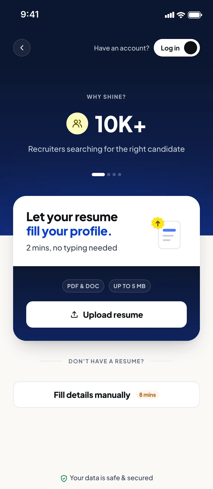
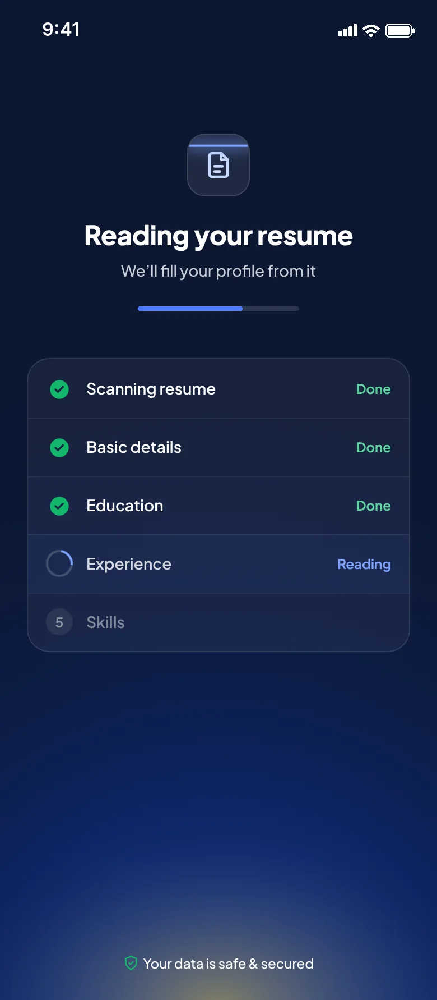
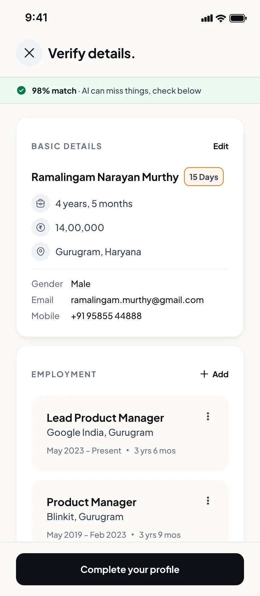
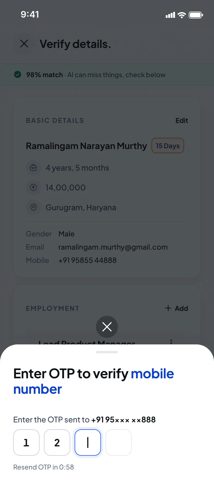
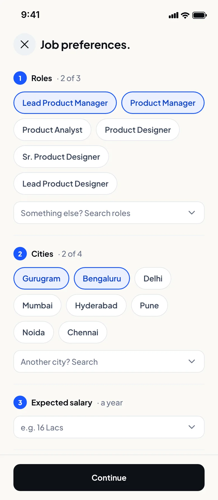
Flexible entry points with a choice of onboarding method
Upload a resume once and the system extracts the details
Pre-filled fields are reviewed and edited, not typed from scratch
Verify the mobile number to finish registration
Preferences help the system deliver more personalised job matches
Structured & Progressive Registration Flow
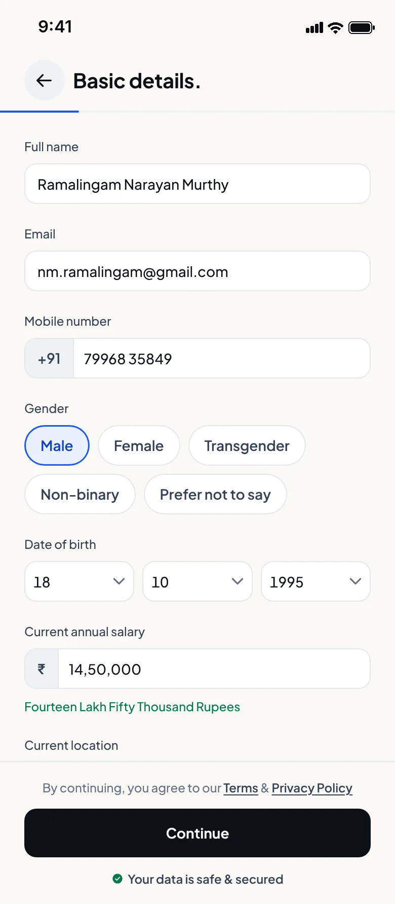
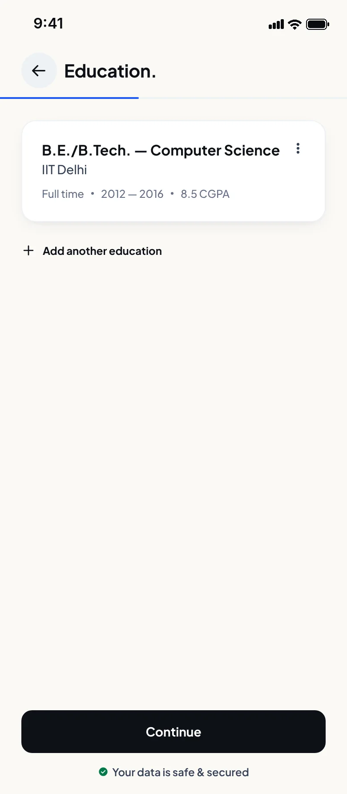
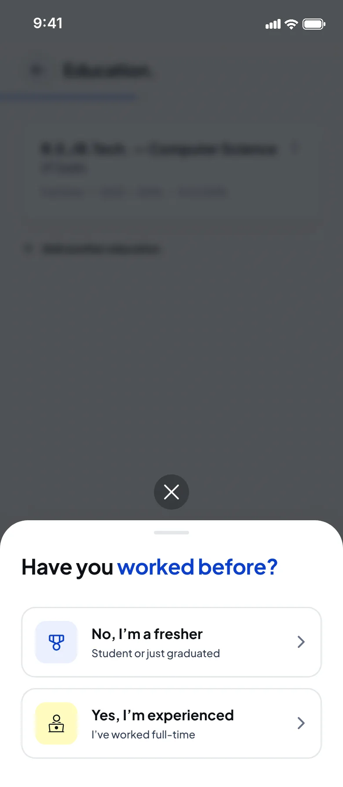
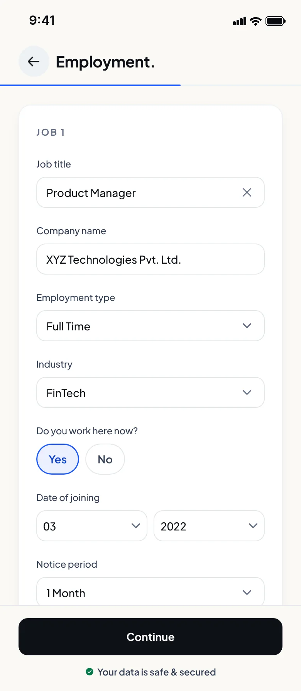
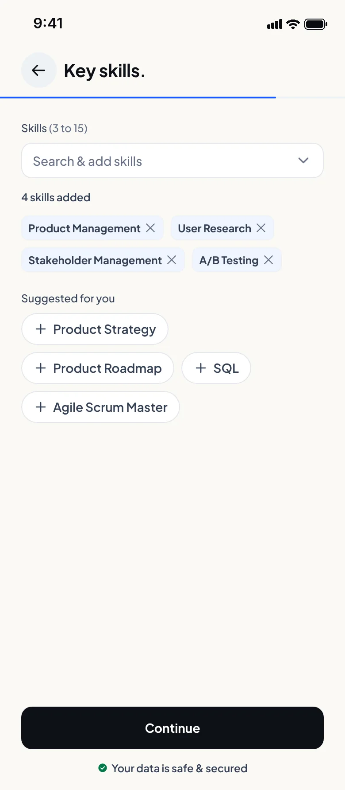
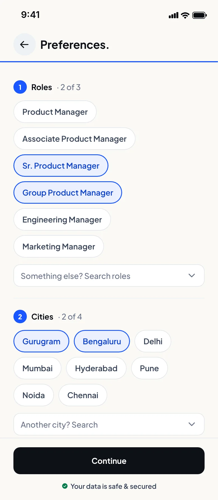
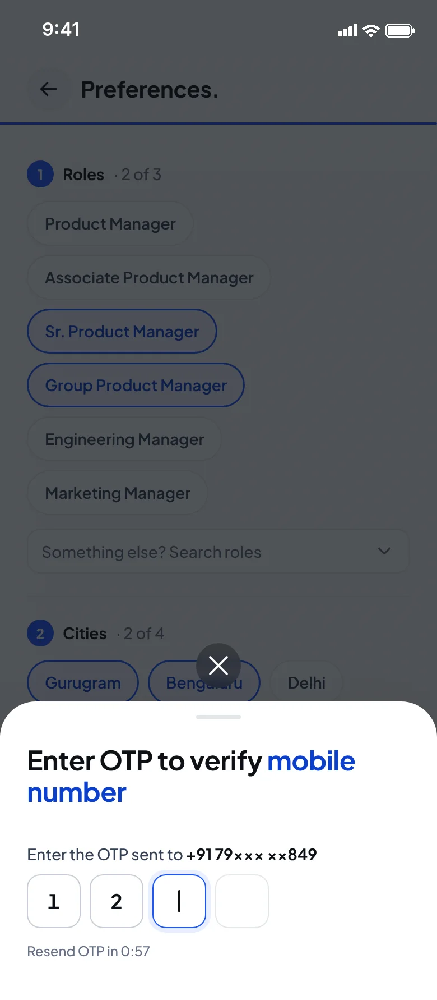
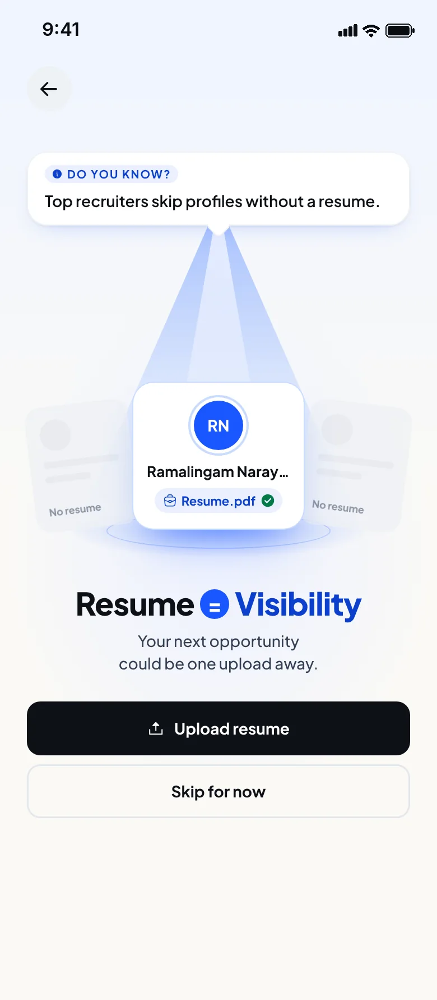
Flexible entry points with a choice of onboarding method
Required details are segmented into logical steps for faster, error-free completion
Education details help recruiters understand a candidate's background
Adaptive flow tailors steps to the user's experience level
Past roles and organisations help recruiters understand a candidate's expertise
Capturing skills with experience improves search relevance and match quality
Preferences help the system deliver more personalised job matches
Verify the mobile number to finish registration
A resume can still be added at the end to complete the profile
Usability Test (Round 1)
20 real users, freshers and experienced, tried the redesigned step-by-step flow.
Check whether the new flow was clear, understood and easy to move through.
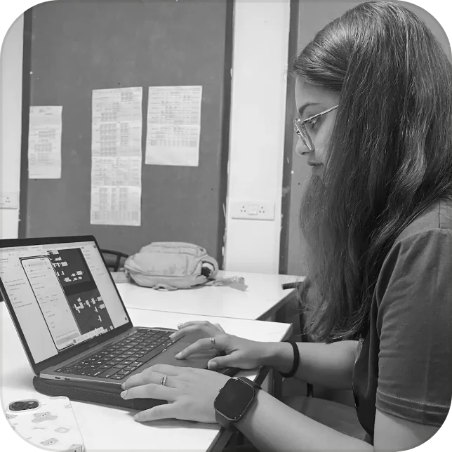
Yet the number of steps and wrongly parsed details frustrated them.
Too many steps. Competitors ask just as many, so the real gap is trust.
Every user understood the labels and instructions.
Only 4 of 20 needed help to complete onboarding.
Key Takeaways
What round 1 told us, and what we changed.
Resume onboarding still felt long at 5 steps
Trimmed to 3 steps, focused on required details onlyManual users wanted to switch to a resume midway
Resume upload offered at multiple stages of the manual flowNumbered steps made the manual flow feel endless
A progress bar replaced the step counter to ease fatigueMistakes only showed after submitting
Fields now check input as users typeFinal Iteration Before Development
The numbers fell short of our goals.
Learn, Refine, Rethink
| What we refined | Resume-based | Manual |
|---|---|---|
| User ID creation | ||
| Job preferences | ||
| Resume | — |
Competitors do well with a similar manual flow. So we looked beyond the form and found two paths.